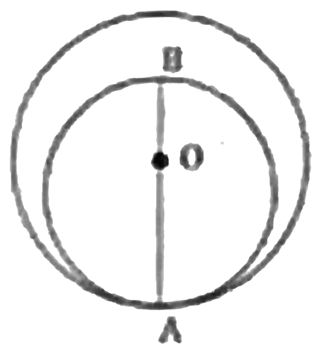

בכמה מספרים תלת־ספרתיים מכפלת הספרות גדולה מהמספר עצמו?
בשק יש כדורים כחולים, ירוקים ואדומים. מכל אחד מהצבעים יש לפחות 10 כדורים. מספר הכדורים הכחולים גדול ב־25% ממספר הכדורים הירוקים. מספר הכדורים האדומים גדול ב־20% ממספר הכדורים הכחולים.
מספר הכדורים הכולל בשק בהכרח –
(x⁶ + y⁶) × (x³ + y³) × (x³ − y³) = ?

בסרטוט שלפניכם קובייה שמקצועה a ובתוכה חסום גליל.
על פי נתונים אלו ונתוני הסרטוט, נפח הגלילהנפח הכלוא בין הקובייה והגליל = ?
בשעה 8:00 החלה שני נסיעה במהירות של 90 קמ"ש. לאחר שעה יצא אסף לנסיעה באותו המסלול במהירות של 120 קמ"ש. באילו מנקודות הזמן הבאות היה המרחק ביניהם 30 ק"מ?
a, b ו־c הם שלושה מספרים טבעיים עוקבים. a < b < c
איזה מהביטויים הבאים הוא הקטן ביותר?
נתון: 15 < a − b , 10 < a + b
מה מהבאים נכון בהכרח?

בסרטוט שלפניכם מעגל קטן ש־AB הוא קוטרו ו־A היא נקודת ההשקה שלו למעגל הגדול שמרכזו O.
נתון: 3BO = 2AO
מה היחס בין שטח המעגל הקטן לשטח המעגל הגדול?
לכל מספר שלם x הוגדרה הפעולה $(x) כך: $(x) = סכום הספרות של x.
נתון: x8 ו־$(x)6 הם מספרים שלמים. מה מהבאים יכול להיות x?
נתון: x מספר שלם הגדול מ־10.
x²(x+2)! + 1(x+1)! − 1x! = ?
⚠ התשובות בשאלה זו קטנות מאוד בסרטון; (4) ודאית, (1)–(3) משוחזרות בקירוב.